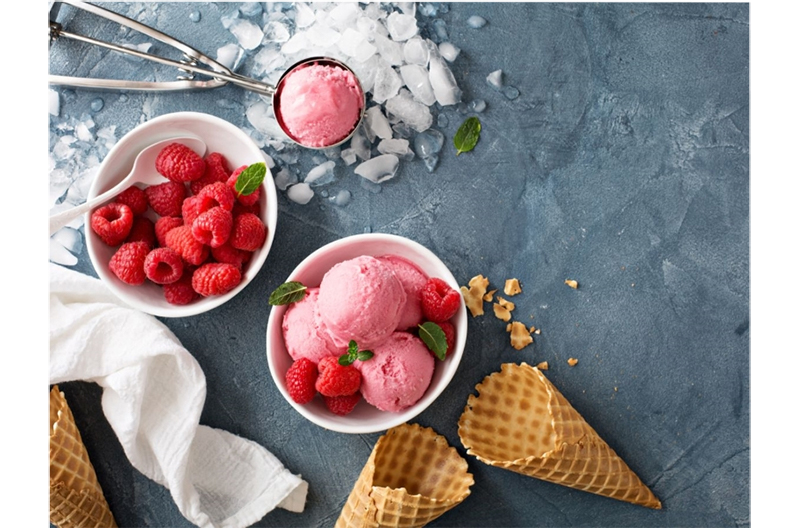
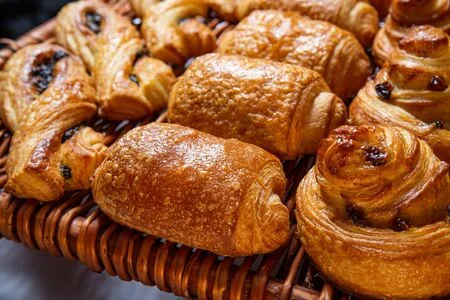
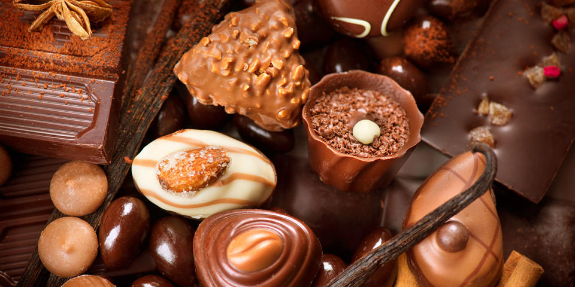
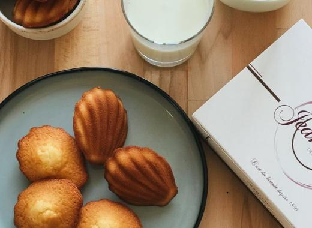
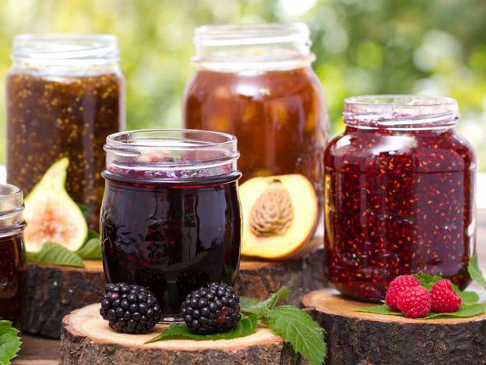

La comida
La comida
la comida francesa por mis origenes de borgona en francia, pero tambien arabe, asiatica, colombiana, italiana, espanola,
 la pasteleria
la pasteleria
la pasteleria fue mi primera experiencia culinaria por la actitude de los profesionales, y que me gustaba mucho el dulce..
el heladeria
la heladeria es el mundo de su enfencia.
la panaderia
la bellesa de los croissants y panes de chocolate depertaba los sentidos de los mas jovenes.
la chocolateria
... fue para mi inolvidable por los sabores que puedemos desarollar.
la galleteria
...fue una alegria de descubrir las texturas tan diferentes. Pero la madeleine queda para mi el mejor de las galletas
las mermeladas
los aprendi mas tarde, sobretodo en colombia en donde jugaba con las frutas mezclandolos par crear otros sabores unicas, como la mezcla de las fresas con el lulo.